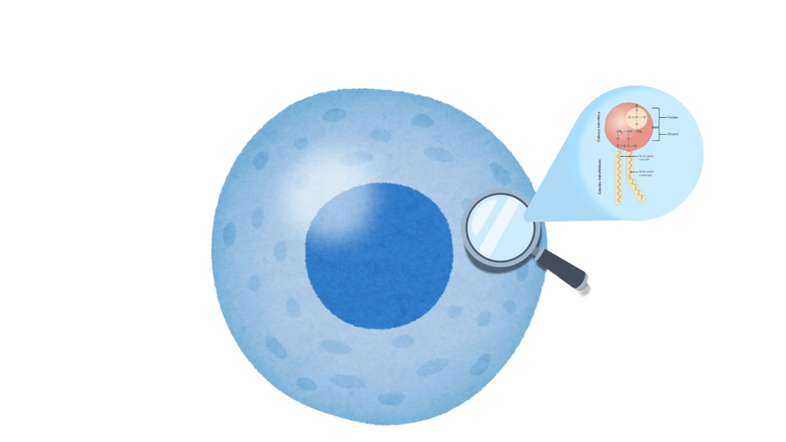

LIPÍDIOS
Os lipídios incluem gorduras, óleos, ceras e fosfolipídios, e exercem funções importantes nos seres vivos.
O que são lipídios?
Lipídios são moléculas orgânicas que não se dissolvem facilmente em água. Entre os principais exemplos estão as gorduras, os óleos, as ceras e os fosfolipídios.Funções no organismo
Os lipídios armazenam energia, protegem os órgãos, ajudam a manter a temperatura corporal e participam da produção de alguns hormônios. Também auxiliam na absorção das vitaminas A, D, E e K.No dia a dia
O azeite utilizado para temperar saladas contém lipídios, que participam do fornecimento de energia e ajudam na absorção das vitaminas A, D, E e K.Dois exemplos
- Triglicerídeos: encontrados em óleos e gorduras, funcionam como reserva de energia para o organismo.
-
Fosfolipídios: são componentes fundamentais das membranas celulares.

Alimentação e saúde
Os lipídios são essenciais para o funcionamento do corpo e devem estar presentes em uma alimentação equilibrada. Porém, o consumo excessivo de determinadas gorduras pode aumentar o risco de problemas cardiovasculares.Saiba mais
Os lipídios também fazem parte das membranas celulares. Por isso, não servem apenas como reserva de energia, mas também ajudam na estrutura e no funcionamento das células.